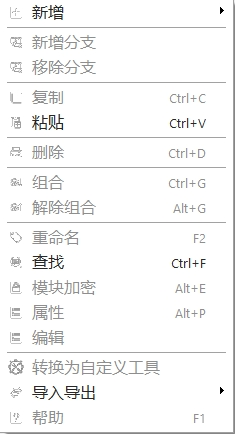
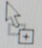
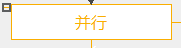
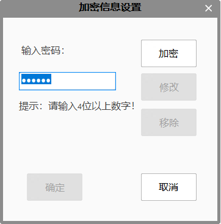
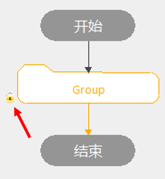

Lưu đồ là phần cốt lõi của dự án. Hiểu rõ các chức năng của lưu đồ và cấu hình theo nhu cầu thực tế sẽ giúp xây dựng nên một dự án hoàn chỉnh. Đây là phần quan trọng nhất trong việc sử dụng phần mềm.
Trong lưu đồ có 2 loại phần tử: hình khối và đường link. Ví dụ: là hình khối; đường link là đường có mũi tên. Nhấp chuột phải vào hình khối hoặc đường link trong lưu đồ sẽ bật ra menu chức năng, như hình bên dưới. Mỗi chức năng đều có phím tắt tương ứng, giúp người dùng dễ dàng và hiệu quả khi cấu hình lưu đồ.

Thêm/Xóa: Thêm hoặc xóa hình khối;
Thêm/Xóa nhánh: Trong luồng điều khiển, có thể thêm hoặc xóa nhánh (khi xóa, cần chọn đúng nhánh cần xóa);
Kéo thả: Chọn một hoặc nhiều hình khối, giữ chuột trái và kéo đến vị trí mong muốn trong lưu đồ, trong quá trình kéo chuột sẽ hiển thị biểu tượng ;
Kéo công cụ vào: Chọn công cụ trong hộp công cụ, giữ chuột trái và kéo vào vị trí mong muốn trong lưu đồ;
Sao chép/Dán: Có thể sao chép hình khối đã chọn và dán vào vị trí khác trong lưu đồ để tái sử dụng;
Chọn đơn/lặp: Có thể chọn một hoặc nhiều hình khối để thực hiện các thao tác như di chuyển, sao chép, dán, nhóm, mã hóa, lưu mô-đun,...;
Nhấp đúp: Nhấp đúp vào hình khối để chỉnh sửa chuỗi dữ liệu, kết nối tham số đầu vào của công cụ;
Thu phóng: Giữ phím Ctrl và lăn chuột để thu phóng lưu đồ;
Thanh cuộn: Thanh cuộn nằm ở cạnh dưới và phải của lưu đồ, tiện cho việc xem khi có nhiều hình khối;
Menu chuột phải: Nhấp chuột phải vào hình khối hoặc đường link để bật menu chức năng, bao gồm thêm, xóa, nhóm,...;
Thu gọn/Mở rộng: Chỉ áp dụng với nhóm, mô-đun mã hóa,...
Nhóm: Nhấp đúp vào đường nhóm để thu gọn thành Group; nhấp đúp vào Group để mở rộng;
Nhánh/Chạy song song: Nhấp vào biểu tượng dấu trừ  ở góc trên bên trái của hình khối đầu nhánh để thu gọn; sau khi thu gọn, nhấp vào dấu cộng để mở rộng.
Mô-đun mã hóa: Sau khi mã hóa, sẽ thu gọn thành Group; nhập mật khẩu để mở mô-đun mã hóa;
Nhóm/Bỏ nhóm:
Thêm nhóm: Nhóm một số hình khối lại để dễ thu gọn, làm lưu đồ gọn gàng hơn. Chọn các hình khối cần nhóm (giữ phím Shift để chọn nhiều), nhấp chuột phải vào bất kỳ hình khối nào đã chọn, chọn “Nhóm” (hoặc phím tắt Ctrl+G);
Bỏ nhóm: Khi nhóm đang mở rộng, chọn đường nhóm, nhấp chuột phải và chọn “Bỏ nhóm” (hoặc chọn đường nhóm rồi nhấn Alt+G);
Phím tắt: Có thể nhanh chóng thao tác nhóm, mã hóa,... chi tiết xem trong menu chuột phải;
Cài đặt thuộc tính:
Thuộc tính hình khối công cụ: Nhấp chuột phải vào hình khối công cụ, chọn “Thuộc tính” để mở giao diện nâng cao (nếu công cụ không có giao diện nâng cao thì tùy chọn này sẽ không khả dụng);
Đổi tên: Có thể đổi tên các hình khối (trừ “Bắt đầu” và “Kết thúc”) để dễ nhận biết; số thứ tự không thể thay đổi;
Tìm kiếm:
Tìm theo vị trí: Tìm vị trí của hình khối trong lưu đồ. Có thể tìm theo công cụ, hình khối điều khiển, nhãn nhánh,... hỗ trợ tìm mờ (theo từ khóa), không hỗ trợ tìm theo biến. Nếu nhập tên biến, kết quả tìm kiếm là 0. Tìm theo tên hiện tại là tìm theo tên hình khối hiện tại, nhập từ khóa hoặc tên đầy đủ sẽ hiển thị các hình khối phù hợp. Tìm theo loại là tìm theo tên gốc của hình khối, ví dụ nhập “Công cụ thu thập ảnh” sẽ hiển thị tất cả các công cụ thu thập ảnh;
Chuyển thành công cụ tùy chỉnh: Chọn một loạt hình khối trong lưu đồ, nhấp chuột phải chọn “Chuyển thành công cụ tùy chỉnh”, lưu đồ sẽ được chuyển thành một công cụ mới. Sau khi chuyển, các hình khối được chọn sẽ bị xóa và tạo thành một công cụ tùy chỉnh có chức năng giống với phần đã chọn. Chi tiết xem mục công cụ tùy chỉnh.
Hoàn tác và Làm lại: Lưu đồ hỗ trợ hoàn tác và làm lại, tránh thao tác sai ngoài ý muốn;
Mã hóa/Giải mã mô-đun: Có thể mã hóa các mô-đun đặc biệt để bảo vệ nội dung;
Đối tượng có thể mã hóa: Mô-đun thu gọn: Nhánh/Chạy song song/Nhóm;
Mã hóa mô-đun: Nhấp chuột phải vào mô-đun đã thu gọn, chọn “Cài đặt mã hóa mô-đun”, nhập mật khẩu ít nhất 4 chữ số, nhấn “Mã hóa” để hoàn tất. Sau khi mã hóa, góc dưới trái mô-đun sẽ hiển thị biểu tượng khóa;

Giải mã mô-đun: Nhấp đúp vào mô-đun đã mã hóa, nhập mật khẩu để mở. Sau khi thu gọn lại, lần mở tiếp theo cũng cần nhập lại mật khẩu;
Đổi/xóa mật khẩu: Nhấp chuột phải vào mô-đun đã mã hóa, chọn “Cài đặt mã hóa mô-đun”, nhập đúng mật khẩu, hệ thống sẽ bật quyền cho các nút “Đổi” và “Xóa”;
Hiển thị trạng thái khi chạy:
Chạy hình khối đã chọn: Nếu công cụ thực thi thất bại, hình khối sẽ hiển thị màu đỏ;
Chạy từng bước hoặc tạm dừng: Hình khối công cụ tiếp theo sẽ hiển thị màu xanh lá;
Chạy liên tục: Hình khối công cụ đầu tiên thực thi thất bại sẽ hiển thị màu đỏ; công cụ tiếp theo hiển thị màu xanh (do tốc độ nhanh, có thể không rõ ràng);
Lưu/chèn mô-đun: Có thể lưu mô-đun chứa một phần nội dung hoặc chức năng để dễ dàng tái sử dụng;
| Chức năng | Phím tắt | Chức năng | Phím tắt |
|---|---|---|---|
| Sao chép | Ctrl+C | Đổi tên | F2 |
| Dán | Ctrl+V | Tìm kiếm | Ctrl+F |
| Xóa | Ctrl+D | Chèn mô-đun | Alt+O |
| Nhóm | Ctrl+G | Lưu mô-đun | Alt+S |
| Bỏ nhóm | Alt+G | Thuộc tính | Alt+P |
| Mã hóa mô-đun | Alt+E |
| Chức năng | Phím tắt | Chức năng | Phím tắt |
|---|---|---|---|
| Làm lại | Ctrl+Y | Chạy liên tục | F5 |
| Hoàn tác | Ctrl+Z | Chạy hình khối đã chọn | F7 |
| Tạo mới | Ctrl+N | Chạy liên tục phần chọn | Ctrl+F5 |
| Mở | Ctrl+O | Chạy một lần | F6 |
| Lưu | Ctrl+S | Dừng tất cả | Shift+F5 |
| Tạm dừng | Shift+F10 | Tiếp tục | Shift+F10 |